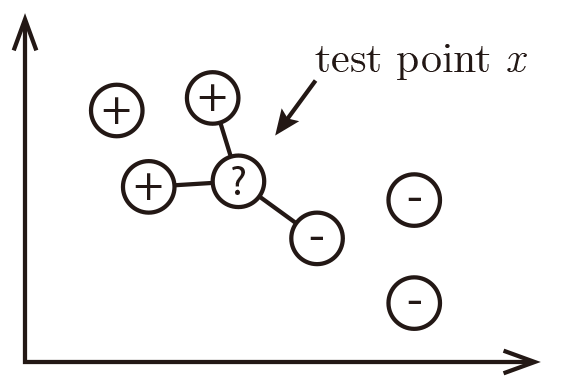
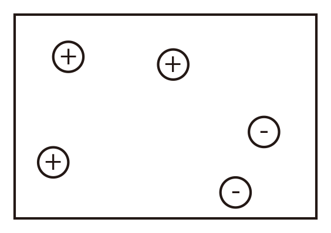
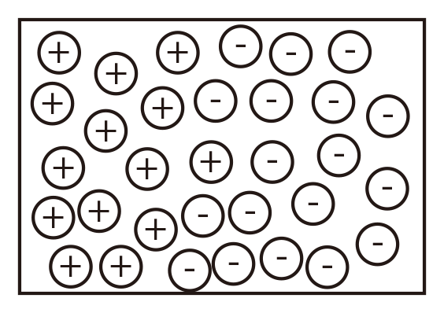
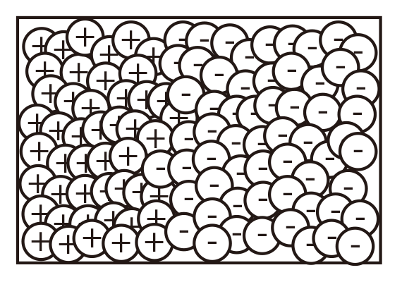
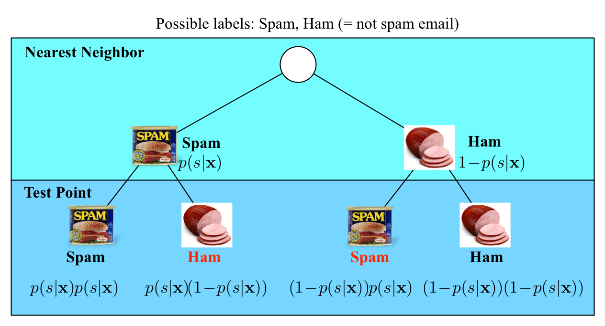
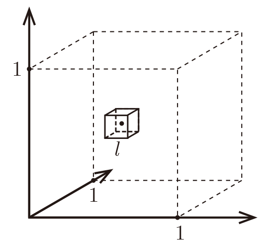

Lecture 2: k-nearest neighbors
The k-NN algorithm
Assumption:
Similar Inputs have similar outputs
Classification rule:
For a test input $x$, assign the most common label amongst its k most similar training inputs

Neighbors' labels are $2\times$⊕ and $1\times$⊖ and the result is ⊕.
Formal (and borderline incomprehensible) definition of k-NN:
Test point: $\mathbf{x}$
Define the set of the $k$ nearest neighbors of $\mathbf{x}$ as $S_\mathbf{x}$. Formally $S_\mathbf{x}$ is defined as $S_\mathbf{x}\subseteq {D}$ s.t. $|S_\mathbf{x}|=k$ and $\forall(\mathbf{x}',y')\in D\backslash S_\mathbf{x}$,
\[\text{dist}(\mathbf{x},\mathbf{x}')\ge\max_{(\mathbf{x}'',y'')\in S_\mathbf{x}} \text{dist}(\mathbf{x},\mathbf{x}''),\]
(i.e. every point in $D$ but not in $S_\mathbf{x}$ is at least as far away from $\mathbf{x}$ as the furthest point in $S_\mathbf{x}$).
We can then define the classifier $h()$ as a function returning the most common label in $S_\mathbf{x}$:
\[h(\mathbf{x})=\text{mode}(\{y'':(\mathbf{x}'',y'')\in S_\mathbf{x}\}),\]
where $\text{mode}(\cdot)$ means to select the label of the highest occurrence.
(Hint: In case of a draw, a good solution is to return the result of $k$-NN with smaller $k$)
What distance function should we use?
The k-nearest neighbor classifier fundamentally relies on a distance metric. The better that metric reflects label similarity, the better the classified will be. The most common choice is the Minkowski distance
\[\text{dist}(\mathbf{x},\mathbf{z})=\left(\sum_{r=1}^d |x_r-z_r|^p\right)^{1/p}.\]
Quiz#1: This distance definition is pretty general and contains many well-known distances as special cases:
$p = 1$: Manhattan Distance ($l_1$-norm)
$p = 2$: Euclidean Distance ($l_2$-norm)
$p \to \infty$: Maximum Norm
$p \to 0$: (not well defined)
Quiz#2: How does $k$ affect the classifier? What happens if $k=n$? What if $k =1$?
$k = n$
$k = 1$
Brief digression (Bayes optimal classifier)
What is the Bayes optimal classifier?
Assume you knew $\mathrm{P}(y|\mathbf{x})$. What would you predict?
Examples: $y\in\{0,1\}$
\[
\mathrm{P}(+1| x)=0.8\\
\mathrm{P}(-1| x)=0.2\\
\text{Best prediction: }y^* = h_\mathrm{opt} = argmax_y P(y|\mathbf{x})\]
(You predict the most likely class.)
What is the error of the BayesOpt classifier?
$$\epsilon_{BayesOpt}=1-\mathrm{P}(h_\mathrm{opt}(\mathbf{x})|y) = 1- \mathrm{P}(y^*|\mathbf{x})$$
(In our example, that is $\epsilon_{BayesOpt}=0.2$.)
You can never do better than the Bayes Optimal Classifier.
1-NN Convergence Proof
Cover and Hart 1967[1]: As $n \to \infty$, the $1$-NN error is no more than twice the error of the Bayes Optimal classifier.
(Similar guarantees hold for $k>1$.)
|
$n$ small

|
$n$ large

|
$n\to\infty$

|
Let $\mathbf{x}_\mathrm{NN}$ be the nearest neighbor of our test point $\mathbf{x}_\mathrm{t}$. As $n \to \infty$, $\text{dist}(\mathbf{x}_\mathrm{NN},\mathbf{x}) \to 0$,
i.e. $\mathbf{x}_\mathrm{NN} \to \mathbf{x}_{t}$.
(This means the nearest neighbor is identical to $\mathbf{x}_\mathrm{t}$.)
You return the label of $\mathbf{x}_\mathrm{NN}$.
What is the probability that this is not the label of $\mathbf{x}$?
(This is the probability of drawing two different label of $\mathbf{x}$)
\begin{multline*}
\epsilon_{NN}=\mathrm{P}(y^* | \mathbf{x}_{t})(1-\mathrm{P}(y^* | \mathbf{x}_{NN})) + \mathrm{P}(y^* | \mathbf{x}_{NN})(1-\mathrm{P}(y^* | \mathbf{x}_{t}))\\
\le (1-\mathrm{P}(y^* | \mathbf{x}_{NN})+(1-\mathrm{P}(y^* | \mathbf{x}_{t})
= 2(1-\mathrm{P}(y^* | \mathbf{x}_{t}) = 2\epsilon_\mathrm{BayesOpt},
\end{multline*}
where the inequality follows from $\mathrm{P}(y^* | \mathbf{x}_{+})\le 1$ and $\mathrm{P}(y^* | \mathbf{x}_{NN})\le 1$.

In the limit case, the test point and its nearest neighbor are identical.
There are exactly two cases when a misclassification can occur:
when the test point and its nearest neighbor have different labels.
The probability of this happening is the probability of the two red events:
$(1\!-\!p(s|\mathbf{x}))p(s|\mathbf{x})+p(s|\mathbf{x})(1\!-\!p(s|\mathbf{x}))=2p(s|\mathbf{x})(1-p(s|\mathbf{x}))$
Good news:
As $n \to\infty$, the $1$-NN classifier is only a factor 2 worse than the best possible classifier.
Bad news: We are cursed!!
Curse of Dimensionality
Imagine $X=[0,1]^d$, and $k = 10$ and all training data is sampled uniformly
with $X$, i.e. $\forall i, x_i\in[0,1]^d$

Let $\ell$ be the edge length of the smallest hyper-cube that contains all $k$-nearest neighbor of a test point.
Then $\ell^d\approx\frac{k}{n}$ and $\ell\approx\left(\frac{k}{n}\right)^{1/d}$.
If $n= 1000$, how big is $\ell$?
| $d$ | $\ell$ |
| 2 | 0.1 |
| 10 | 0.63 |
| 100 | 0.955 |
| 1000 | 0.9954 |
Almost the entire space is needed to find the $10$-NN.

Figure demonstrating ``the curse of dimensionality''. The histogram plots show the distributions of all pairwise distances
between randomly distributed points within $d$-dimensional unit squares. As the number of dimensions $d$ grows, all distances concentrate within a very small range.
Imagine we want $\ell$ to be small (i.e the nearest neighbor are truly near by), then how many data point do we need?
Fix $\ell=\frac{1}{10}=0.1$ $\Rightarrow$ $n=\frac{k}{\ell^d}=k\cdot 10^d$,
which grows exponentially!
Rescue to the curse: Data may lie in low dimensional subspace or on sub-manifolds. Example: natural images (digits, faces).
k-NN summary
$k$-NN is a simple and effective classifier if distances reliably reflect a semantically meaningful notion of the dissimilarity. (It becomes truly competitive through metric learning)
As $n \to \infty$, $k$-NN becomes provably very accurate, but also very slow.
As $d \to \infty$, the curse of dimensionality becomes a concern.
Reference
[1]Cover, Thomas, and, Hart, Peter. Nearest neighbor pattern classification[J]. Information Theory, IEEE Transactions on, 1967, 13(1): 21-27